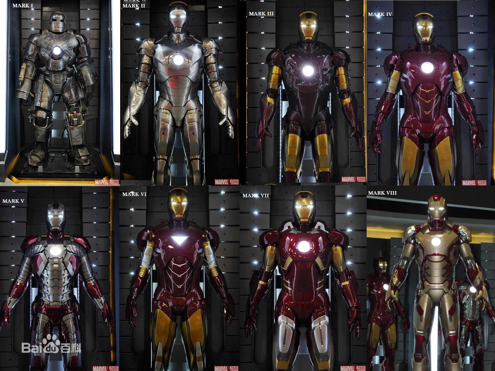
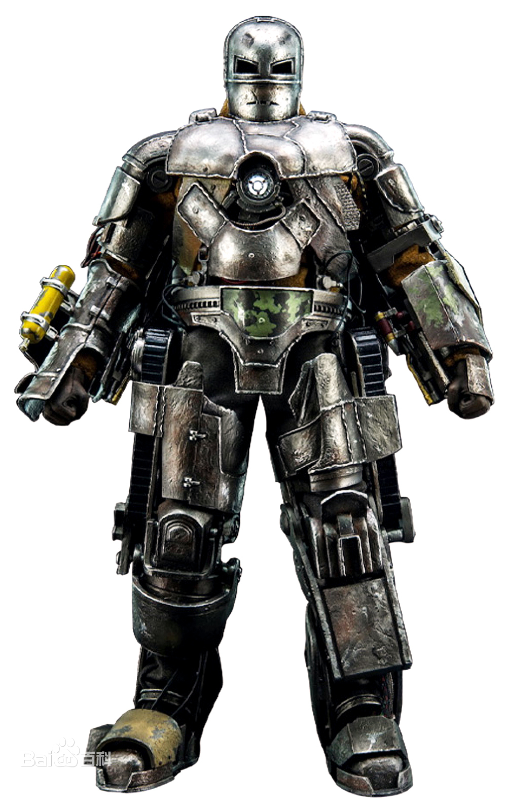
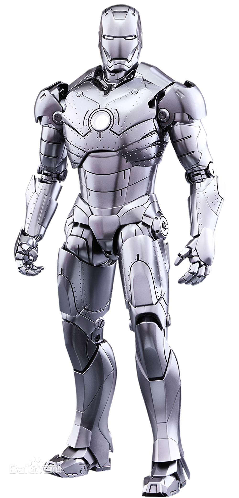
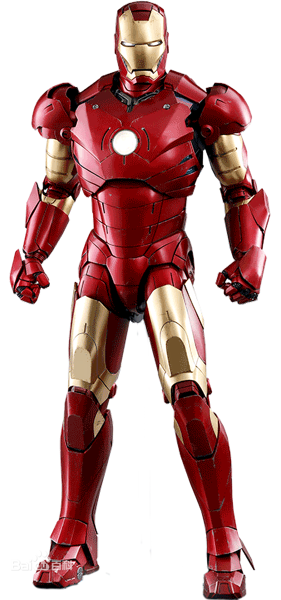
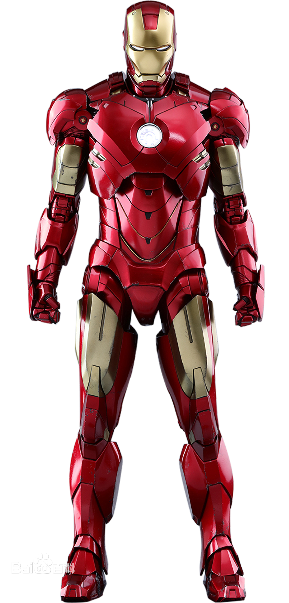
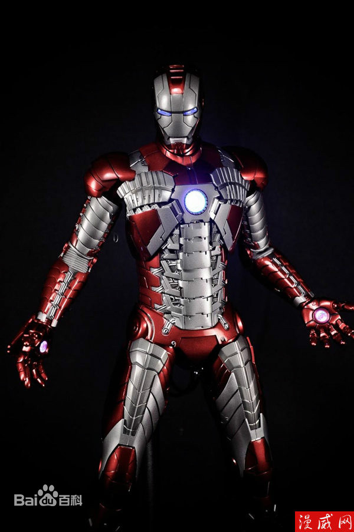

| 装甲 | 价格 |
| Mark1 | 1000w |
| Mark2 | 1500w |
| Mark3 | 2000w |
| Mark4 | 2500w |
| Mark5 | 3000w |
| Mark6 | 3500w |
Mark1铁罐装甲

Mark1是托尼·斯塔克创造的第一个机甲，出现于真人电影《钢铁侠》中，是最重的装甲之一，这也是唯一一个装备火焰喷射器的装甲。Mark1重约1500磅（约680公斤），由防弹铁、铜、镁合金和一些皮具组成，外观非常粗糙，这是因为托尼创造装甲时，各种资源有限。 Mark1机甲实际上是利用杰里科导弹部件建造，其装甲能应付小型武器射击。Mark1装甲没有气动控制其飞行，机甲底部装备了喷气靴，飞行动力从杰里科导弹的推进系统中提取固态火箭燃料来提供。Mark1双臂装有火焰喷射器，由装甲背后的小煤气罐提供燃料，然后通过手动控制点燃，制造出一个极具破坏性的火焰，射程约15米。 Mark1装甲同时配备有强大的微型导弹，其被安装在装甲的左臂，在电影《钢铁侠》中，托尼·斯塔克用微型导弹对付恐怖分子头目，但由于没有足够的电力，火箭发射装置出现故障，托尼使用手动发射。 [1] 量产型Mark1原型机（毕竟是欧比准备拿来卖的原型机） 从Mark1研制而来，但由于无法小型化反应堆，不得不抢夺托尼身上的2代反应堆。武器方面右手有加特林，左手为导弹发射器，肩部有反坦克导弹发射架。《钢铁侠1》结尾先被打坏瞄准系统，后毁于反应堆爆炸。
Mark2战争机器原型机

Mark2是一个原型机，出现于真人电影《钢铁侠》和《钢铁侠2》中。主要用于测试、探索装甲各方面性能。装甲为原始颜色--钢银色。Mark2是第一个能够实现持续飞行的装甲，它的手部和靴子能同时释放电弧脉冲，制造超声波使装甲可以飞行或高速飞行。 电弧释放装置是Mark2一个重要组成部分，当装甲飞行或悬停时达到稳定装甲作用。同时Mark2腿部和背后有内置的副翼和襟翼，以增加飞行稳定性，这些设计特征在更高版本装甲里变得更隐蔽、性能更好。Mark2搭载贾维斯操作系统，可进行目标扫描，全球定位系统以及提供使用者生命体征数据。装甲缺点：Mark2号因材质问题，装甲在高海拔地区会出现结冰现象，从而导致整个装甲系统崩溃（这个问题在Mark3的装甲设计中已经解决）。 [2] 在电影《钢铁侠2》中，为控制住失控的托尼，詹姆斯·罗德斯穿上Mark2，与托尼所穿的Mark4迎来了一次大战。此后罗德斯带走了该战甲，由贾斯汀·汉默改装为战争机器装甲。
Mark3

Mark3是托尼·斯塔克创造的第三套装甲，也是托尼使用最多的装甲。在真人电影《钢铁侠》中，托尼就是穿着Mark3装甲去打击恐怖分子。Mark3号是第一套上色的装甲，颜色为著名的、经典的红黄色，颜色主题源自托尼的老爷车。Mark2在高海拔地区装甲外表会出现结冰现象，但Mark3更换装甲材质以后已经完美解决。 Mark3号装甲配备有瞄准系统，可同时锁定多个目标，然后使用双肩六管迷你炮解决目标。Mark3装甲手臂隐藏有微型导弹，在真人电影《钢铁侠》中，托尼使用微型导弹炸毁了一辆坦克。Mark3还配备了诱弹，用于干热追踪导弹或者分散敌人注意力。
Mark4

Mark4是托尼·斯塔克创造的第四套装甲，颜色还是经典的红黄色。装甲的胸部、肩部和腹部都采用了新设计，同时Mark4整体线条比较硬朗。Mark4是托尼·斯塔克透露自己是钢铁侠后建造的，用来取代已经严重受损Mark3号。 之前的装甲反应堆会导致托尼·斯塔克慢性中毒，后来托尼创造了新元素，解决了这个问题。在钢铁侠2中，托尼·斯塔克穿着Mark4出席展览会。
Mark5手提箱装甲

Mark5是托尼·斯塔克创造的第五套钢铁侠装甲，颜色为红色、银色。是托尼的钢铁侠身份曝光以后，为了应付突发事件而创造的便携型装甲，可以在任何地方进行组装，不需要时可折叠成一个手提箱。为了减少装甲整体重量，Mark5的装甲只有单层设计，比较薄弱。 Mark5设计初衷是便携、可在紧急情况下使用，因此除了手掌心和胸部的脉冲炮外，没有配备其它武器。Mark5可以飞行，但飞行速度和高度都有限制，并且在飞行过程中携带的重量也被限制，拥有的飞行功能只是为了帮助托尼脱离危险。另外Mark5装甲能抵抗大多数小型武器攻击、小规模的爆炸和高温。 Mark5主要部分由一些未知金属组成，而不是钛合金。类似编织带，防御等级降低，但它可以折叠成小尺寸，与公文包大小相同。其他的钢铁侠的装甲是由独立的弧反应堆供应能源，Mark5则依靠托尼自己的胸口反应堆供应能源，这样一来能量就有些紧张，但能保证装甲不被其他人使用。装甲缺点：攻击性较弱、防御等级低、部署过程（约18到20秒）使用者不能移动，此时防御能力为零。 [5]